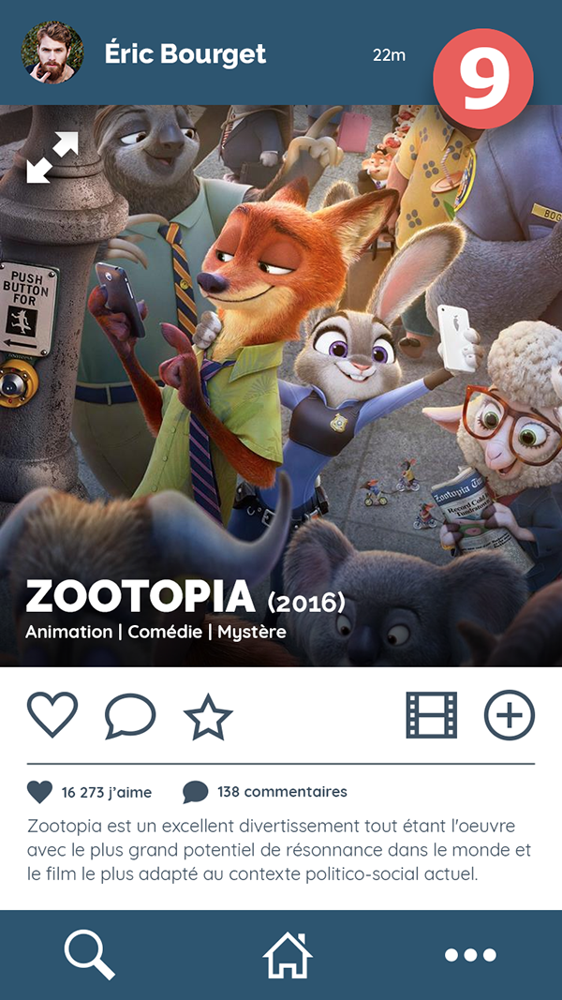
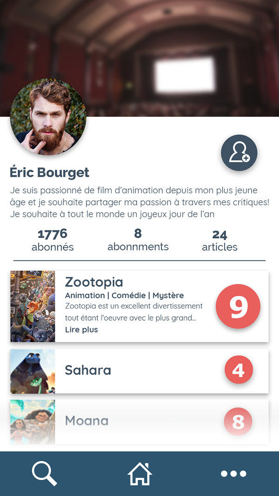
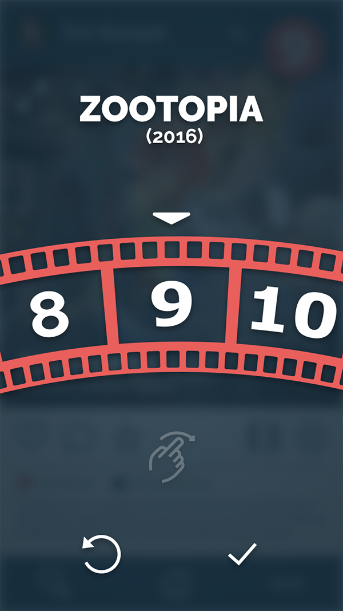
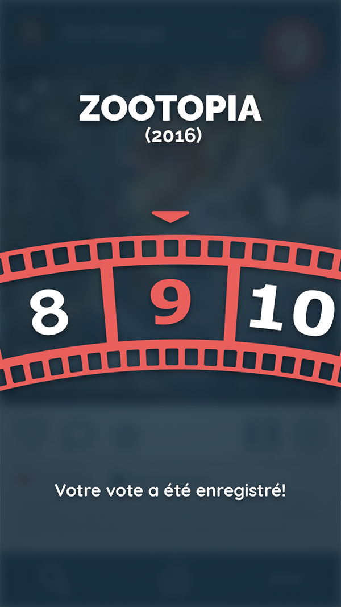

Tim Flix
Description
Réalisé dans le cadre du cours de Design Interactif au Collège Montpetit en automne 2017, Tim Flix est le protoype d'une application mobile spécialisée dans les critiques des films. Selon le concept, les utilisateurs peuvent noter les films ou écrire leur propre critique et la partager par la suite.
Logiciels
Photoshop, Illustrator
Compétences
Design UI/UX, Logotype
Voir sur Behance